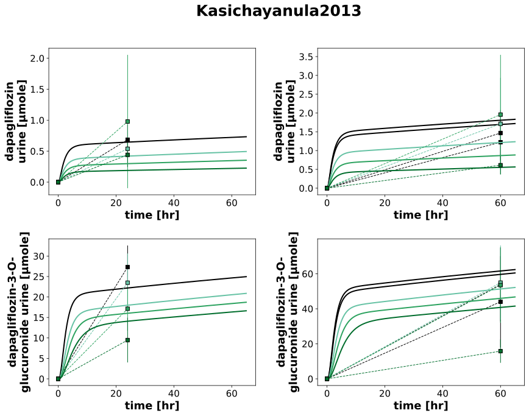

Kasichayanula2013
Models
Datasets
- dapagliflozin 3-o-glucuronide_DAP20_d10_mild: Kasichayanula2013_dapagliflozin 3-o-glucuronide_DAP20_d10_mild.tsv
- dapagliflozin 3-o-glucuronide_DAP20_d10_moderate: Kasichayanula2013_dapagliflozin 3-o-glucuronide_DAP20_d10_moderate.tsv
- dapagliflozin 3-o-glucuronide_DAP20_d10_normal: Kasichayanula2013_dapagliflozin 3-o-glucuronide_DAP20_d10_normal.tsv
- dapagliflozin 3-o-glucuronide_DAP20_d10_severe: Kasichayanula2013_dapagliflozin 3-o-glucuronide_DAP20_d10_severe.tsv
- dapagliflozin_DAP20_d10_mild: Kasichayanula2013_dapagliflozin_DAP20_d10_mild.tsv
- dapagliflozin_DAP20_d10_moderate: Kasichayanula2013_dapagliflozin_DAP20_d10_moderate.tsv
- dapagliflozin_DAP20_d10_normal: Kasichayanula2013_dapagliflozin_DAP20_d10_normal.tsv
- dapagliflozin_DAP20_d10_severe: Kasichayanula2013_dapagliflozin_DAP20_d10_severe.tsv
- dapagliflozin 3-o-glucuronide_cumulative amount_DAP20_d10_mild: Kasichayanula2013_dapagliflozin 3-o-glucuronide_cumulative amount_DAP20_d10_mild.tsv
- dapagliflozin 3-o-glucuronide_cumulative amount_DAP20_d10_moderate: Kasichayanula2013_dapagliflozin 3-o-glucuronide_cumulative amount_DAP20_d10_moderate.tsv
- dapagliflozin 3-o-glucuronide_cumulative amount_DAP20_d10_normal: Kasichayanula2013_dapagliflozin 3-o-glucuronide_cumulative amount_DAP20_d10_normal.tsv
- dapagliflozin 3-o-glucuronide_cumulative amount_DAP20_d10_severe: Kasichayanula2013_dapagliflozin 3-o-glucuronide_cumulative amount_DAP20_d10_severe.tsv
- dapagliflozin 3-o-glucuronide_cumulative amount_DAP20_d4_mild: Kasichayanula2013_dapagliflozin 3-o-glucuronide_cumulative amount_DAP20_d4_mild.tsv
- dapagliflozin 3-o-glucuronide_cumulative amount_DAP20_d4_moderate: Kasichayanula2013_dapagliflozin 3-o-glucuronide_cumulative amount_DAP20_d4_moderate.tsv
- dapagliflozin 3-o-glucuronide_cumulative amount_DAP20_d4_normal: Kasichayanula2013_dapagliflozin 3-o-glucuronide_cumulative amount_DAP20_d4_normal.tsv
- dapagliflozin 3-o-glucuronide_cumulative amount_DAP20_d4_severe: Kasichayanula2013_dapagliflozin 3-o-glucuronide_cumulative amount_DAP20_d4_severe.tsv
- dapagliflozin 3-o-glucuronide_recovery_DAP20_d10_mild: Kasichayanula2013_dapagliflozin 3-o-glucuronide_recovery_DAP20_d10_mild.tsv
- dapagliflozin 3-o-glucuronide_recovery_DAP20_d10_moderate: Kasichayanula2013_dapagliflozin 3-o-glucuronide_recovery_DAP20_d10_moderate.tsv
- dapagliflozin 3-o-glucuronide_recovery_DAP20_d10_normal: Kasichayanula2013_dapagliflozin 3-o-glucuronide_recovery_DAP20_d10_normal.tsv
- dapagliflozin 3-o-glucuronide_recovery_DAP20_d10_severe: Kasichayanula2013_dapagliflozin 3-o-glucuronide_recovery_DAP20_d10_severe.tsv
- dapagliflozin 3-o-glucuronide_recovery_DAP20_d4_mild: Kasichayanula2013_dapagliflozin 3-o-glucuronide_recovery_DAP20_d4_mild.tsv
- dapagliflozin 3-o-glucuronide_recovery_DAP20_d4_moderate: Kasichayanula2013_dapagliflozin 3-o-glucuronide_recovery_DAP20_d4_moderate.tsv
- dapagliflozin 3-o-glucuronide_recovery_DAP20_d4_normal: Kasichayanula2013_dapagliflozin 3-o-glucuronide_recovery_DAP20_d4_normal.tsv
- dapagliflozin 3-o-glucuronide_recovery_DAP20_d4_severe: Kasichayanula2013_dapagliflozin 3-o-glucuronide_recovery_DAP20_d4_severe.tsv
- dapagliflozin_cumulative amount_DAP20_d10_mild: Kasichayanula2013_dapagliflozin_cumulative amount_DAP20_d10_mild.tsv
- dapagliflozin_cumulative amount_DAP20_d10_moderate: Kasichayanula2013_dapagliflozin_cumulative amount_DAP20_d10_moderate.tsv
- dapagliflozin_cumulative amount_DAP20_d10_normal: Kasichayanula2013_dapagliflozin_cumulative amount_DAP20_d10_normal.tsv
- dapagliflozin_cumulative amount_DAP20_d10_severe: Kasichayanula2013_dapagliflozin_cumulative amount_DAP20_d10_severe.tsv
- dapagliflozin_cumulative amount_DAP20_d4_mild: Kasichayanula2013_dapagliflozin_cumulative amount_DAP20_d4_mild.tsv
- dapagliflozin_cumulative amount_DAP20_d4_moderate: Kasichayanula2013_dapagliflozin_cumulative amount_DAP20_d4_moderate.tsv
- dapagliflozin_cumulative amount_DAP20_d4_normal: Kasichayanula2013_dapagliflozin_cumulative amount_DAP20_d4_normal.tsv
- dapagliflozin_cumulative amount_DAP20_d4_severe: Kasichayanula2013_dapagliflozin_cumulative amount_DAP20_d4_severe.tsv
- dapagliflozin_recovery_DAP20_d10_mild: Kasichayanula2013_dapagliflozin_recovery_DAP20_d10_mild.tsv
- dapagliflozin_recovery_DAP20_d10_moderate: Kasichayanula2013_dapagliflozin_recovery_DAP20_d10_moderate.tsv
- dapagliflozin_recovery_DAP20_d10_normal: Kasichayanula2013_dapagliflozin_recovery_DAP20_d10_normal.tsv
- dapagliflozin_recovery_DAP20_d10_severe: Kasichayanula2013_dapagliflozin_recovery_DAP20_d10_severe.tsv
- dapagliflozin_recovery_DAP20_d4_mild: Kasichayanula2013_dapagliflozin_recovery_DAP20_d4_mild.tsv
- dapagliflozin_recovery_DAP20_d4_moderate: Kasichayanula2013_dapagliflozin_recovery_DAP20_d4_moderate.tsv
- dapagliflozin_recovery_DAP20_d4_normal: Kasichayanula2013_dapagliflozin_recovery_DAP20_d4_normal.tsv
- dapagliflozin_recovery_DAP20_d4_severe: Kasichayanula2013_dapagliflozin_recovery_DAP20_d4_severe.tsv
- dapagliflozin 3-o-glucuronide_cumulative amount_DAP50_healthy: Kasichayanula2013_dapagliflozin 3-o-glucuronide_cumulative amount_DAP50_healthy.tsv
- dapagliflozin 3-o-glucuronide_cumulative amount_DAP50_mild: Kasichayanula2013_dapagliflozin 3-o-glucuronide_cumulative amount_DAP50_mild.tsv
- dapagliflozin 3-o-glucuronide_cumulative amount_DAP50_moderate: Kasichayanula2013_dapagliflozin 3-o-glucuronide_cumulative amount_DAP50_moderate.tsv
- dapagliflozin 3-o-glucuronide_cumulative amount_DAP50_normal: Kasichayanula2013_dapagliflozin 3-o-glucuronide_cumulative amount_DAP50_normal.tsv
- dapagliflozin 3-o-glucuronide_cumulative amount_DAP50_severe: Kasichayanula2013_dapagliflozin 3-o-glucuronide_cumulative amount_DAP50_severe.tsv
- dapagliflozin 3-o-glucuronide_recovery_DAP50_healthy: Kasichayanula2013_dapagliflozin 3-o-glucuronide_recovery_DAP50_healthy.tsv
- dapagliflozin 3-o-glucuronide_recovery_DAP50_mild: Kasichayanula2013_dapagliflozin 3-o-glucuronide_recovery_DAP50_mild.tsv
- dapagliflozin 3-o-glucuronide_recovery_DAP50_moderate: Kasichayanula2013_dapagliflozin 3-o-glucuronide_recovery_DAP50_moderate.tsv
- dapagliflozin 3-o-glucuronide_recovery_DAP50_normal: Kasichayanula2013_dapagliflozin 3-o-glucuronide_recovery_DAP50_normal.tsv
- dapagliflozin 3-o-glucuronide_recovery_DAP50_severe: Kasichayanula2013_dapagliflozin 3-o-glucuronide_recovery_DAP50_severe.tsv
- dapagliflozin_cumulative amount_DAP50_healthy: Kasichayanula2013_dapagliflozin_cumulative amount_DAP50_healthy.tsv
- dapagliflozin_cumulative amount_DAP50_mild: Kasichayanula2013_dapagliflozin_cumulative amount_DAP50_mild.tsv
- dapagliflozin_cumulative amount_DAP50_moderate: Kasichayanula2013_dapagliflozin_cumulative amount_DAP50_moderate.tsv
- dapagliflozin_cumulative amount_DAP50_normal: Kasichayanula2013_dapagliflozin_cumulative amount_DAP50_normal.tsv
- dapagliflozin_cumulative amount_DAP50_severe: Kasichayanula2013_dapagliflozin_cumulative amount_DAP50_severe.tsv
- dapagliflozin_recovery_DAP50_healthy: Kasichayanula2013_dapagliflozin_recovery_DAP50_healthy.tsv
- dapagliflozin_recovery_DAP50_mild: Kasichayanula2013_dapagliflozin_recovery_DAP50_mild.tsv
- dapagliflozin_recovery_DAP50_moderate: Kasichayanula2013_dapagliflozin_recovery_DAP50_moderate.tsv
- dapagliflozin_recovery_DAP50_normal: Kasichayanula2013_dapagliflozin_recovery_DAP50_normal.tsv
- dapagliflozin_recovery_DAP50_severe: Kasichayanula2013_dapagliflozin_recovery_DAP50_severe.tsv
Figures
- Fig1: Kasichayanula2013_Fig1.svg
- Tab2_4: Kasichayanula2013_Tab2_4.svg
{kind=link}
Fig1

|
Tab2_4
|  |
Code
../../../../experiments/studies/kasichayanula2013.py
from typing import Dict
from sbmlsim.data import DataSet, load_pkdb_dataframe
from sbmlsim.fit import FitMapping, FitData
from sbmlutils.console import console
from pkdb_models.models.dapagliflozin.experiments.base_experiment import (
DapagliflozinSimulationExperiment,
)
from pkdb_models.models.dapagliflozin.experiments.metadata import Tissue, Route, Dosing, ApplicationForm, Health, \
Fasting, DapagliflozinMappingMetaData
from sbmlsim.plot import Axis, Figure
from sbmlsim.simulation import Timecourse, TimecourseSim
from pkdb_models.models.dapagliflozin.helpers import run_experiments
class Kasichayanula2013(DapagliflozinSimulationExperiment):
"""Simulation experiment of Kasichayanula2013.
renal impairment and t2dm
"""
groups = [
"healthy",
"normal",
"mild",
"moderate",
"severe",
]
colors = {
"healthy": DapagliflozinSimulationExperiment.renal_colors["Normal renal function"],
"normal": DapagliflozinSimulationExperiment.renal_colors["Normal renal function"],
"mild": DapagliflozinSimulationExperiment.renal_colors["Mild renal impairment"],
"moderate": DapagliflozinSimulationExperiment.renal_colors["Moderate renal impairment"],
"severe": DapagliflozinSimulationExperiment.renal_colors["Severe renal impairment"],
}
bodyweights = {
"healthy": 77.9,
"normal": 79.2,
"mild": 73.9,
"moderate": 77.4,
"severe": 78.4,
} # [kg]
fpgs = { # fasting plasma glucose
"healthy": 4.94,
"normal": 9.32,
"mild": 7.75,
"moderate": 6.79,
"severe": 7.23,
} # mM
renal_functions = { # fasting plasma glucose
"healthy": 118.5/100,
"normal": 133.2/100,
"mild": 69.6/100,
"moderate": 42.6/100,
"severe": 24.3/100,
}
info = [
("[Cve_dap]", "dapagliflozin"),
("Aurine_dap", "dapagliflozin_cumulative amount"),
("[Cve_d3g]", "dapagliflozin 3-o-glucuronide"),
("Aurine_d3g", "dapagliflozin 3-o-glucuronide_cumulative amount"),
]
def datasets(self) -> Dict[str, DataSet]:
dsets = {}
for fig_id in ["Fig1", "Tab4A", "Tab2A"]:
df = load_pkdb_dataframe(f"{self.sid}_{fig_id}", data_path=self.data_path)
for label, df_label in df.groupby("label"):
dset = DataSet.from_df(df_label, self.ureg)
# unit conversion to mole/l
if label.startswith("dapagliflozin_"):
dset.unit_conversion("mean", 1 / self.Mr.dap)
elif label.startswith("dapagliflozin 3-o-glucuronide"):
dset.unit_conversion("mean", 1 / self.Mr.d3g)
dsets[f"{label}"] = dset
# console.print(dsets)
# console.print(dsets.keys())
return dsets
def simulations(self) -> Dict[str, TimecourseSim]:
Q_ = self.Q_
tcsims = {}
for group in self.groups:
changes = {
# physiological changes
"BW": Q_(self.bodyweights[group], "kg"),
"[KI__glc_ext]": Q_(self.fpgs[group], "mM"),
"KI__f_renal_function": Q_(self.renal_functions[group], "dimensionless"),
"GU__f_absorption": Q_(self.fasting_map["fasted"], "dimensionless"),
"f_cirrhosis": Q_(self.cirrhosis_map["Control"], "dimensionless"),
}
# single dose
for dose in [20, 50]:
tcsims[f"po_dap{dose}_{group}_single"] = TimecourseSim(
Timecourse(
start=0,
end=65 * 60, # [min]
steps=500,
changes={
**self.default_changes(),
**changes,
"PODOSE_dap": Q_(dose, "mg"),
},
)
)
# multiple dose
tc0 = Timecourse(
start=0,
end=24 * 60, # [min]
steps=500,
changes={
**self.default_changes(),
**changes,
"PODOSE_dap": Q_(20, "mg"),
},
)
tc1 = Timecourse(
start=0,
end=24 * 60, # [min]
steps=500,
changes={
"Aurine_dap": Q_(0, "mmole"),
"Aurine_d3g": Q_(0, "mmole"),
"PODOSE_dap": Q_(20, "mg"),
},
)
tc2 = Timecourse(
start=0,
end=48 * 60, # [min]
steps=500,
changes={
"Aurine_dap": Q_(0, "mmole"),
"Aurine_d3g": Q_(0, "mmole"),
"PODOSE_dap": Q_(20, "mg"),
},
)
tcsims[f"po_dap20_{group}_multi"] = TimecourseSim(
[tc0] + [tc1 for _ in range(5)] + [tc2],
time_offset=-6*24*60,
)
return tcsims
def fit_mappings(self) -> Dict[str, FitMapping]:
mappings = {}
# Fig1
for kp, data in enumerate(self.info):
sid, prefix = data[0], data[1]
for group in self.groups:
if group == "healthy":
continue
health = Health.HEALTHY if group == "normal" else Health.RENAL_IMPAIRMENT
tissue = Tissue.URINE if "cumulative" in prefix else Tissue.PLASMA
mappings[f"fm_dap20_{group}_{sid}"] = FitMapping(
self,
reference=FitData(
self,
dataset=f"{prefix}_DAP20_d10_{group}",
xid="time",
yid="mean",
yid_sd="mean_sd",
count="count",
),
observable=FitData(
self, task=f"task_po_dap20_{group}_multi", xid="time", yid=sid,
),
metadata=DapagliflozinMappingMetaData(
tissue=tissue,
route=Route.PO,
application_form=ApplicationForm.TABLET,
dosing=Dosing.MULTIPLE,
health=health,
fasting=Fasting.FASTED,
),
)
# Tab2
for group in self.groups:
if group == "healthy":
# skipping the 50 mg normal urinary recovery
continue
health = Health.HEALTHY if group == "normal" else Health.RENAL_IMPAIRMENT
# simulation
for k, sid in enumerate(["Aurine_dap", "Aurine_d3g"]):
if k == 0:
substance = "dapagliflozin"
elif k == 1:
substance = "dapagliflozin 3-o-glucuronide"
for dose in [20, 50]:
if dose == 20:
dset_id = f"{substance}_cumulative amount_DAP20_d4_{group}"
elif dose == 50:
dset_id = f"{substance}_cumulative amount_DAP50_{group}"
mappings[f"fm_dap{dose}_{group}_{substance}"] = FitMapping(
self,
reference=FitData(
self,
dataset=dset_id,
xid="time",
yid="mean",
yid_sd="mean_sd",
count="count",
),
observable=FitData(
self, task=f"task_po_dap{dose}_{group}_single", xid="time", yid=sid,
),
metadata=DapagliflozinMappingMetaData(
tissue=tissue,
route=Route.PO,
application_form=ApplicationForm.TABLET,
dosing=Dosing.SINGLE,
health=health,
fasting=Fasting.FASTED,
),
)
return mappings
def figures(self) -> Dict[str, Figure]:
return {
**self.figure_fig1(),
**self.figure_tab2(),
}
def figure_fig1(self) -> Dict[str, Figure]:
fig = Figure(
experiment=self,
sid="Fig1",
num_rows=1,
num_cols=4,
name=f"{self.__class__.__name__}",
)
plots = fig.create_plots(xaxis=Axis(self.label_time, unit=self.unit_time, min=-24), legend=False)
plots[0].set_yaxis(self.label_dap_plasma, unit=self.unit_dap)
plots[1].set_yaxis(self.label_dap_urine, unit=self.unit_dap_urine)
plots[2].set_yaxis(self.label_d3g_plasma, unit=self.unit_d3g)
plots[3].set_yaxis(self.label_d3g_urine, unit=self.unit_d3g_urine)
for kp, data in enumerate(self.info):
sid, prefix = data[0], data[1]
for group in self.groups:
if group == "healthy":
continue
# simulation
plots[kp].add_data(
task=f"task_po_dap20_{group}_multi",
xid="time",
yid=sid,
label=f"Sim {group}",
color=self.colors[group],
)
# data
plots[kp].add_data(
dataset=f"{prefix}_DAP20_d10_{group}",
xid="time",
yid="mean",
yid_sd="mean_sd",
count="count",
label=group,
color=self.colors[group],
)
return {
fig.sid: fig,
}
def figure_tab2(self) -> Dict[str, Figure]:
fig = Figure(
experiment=self,
sid="Tab2_4",
num_rows=2,
num_cols=2,
name=f"{self.__class__.__name__}",
)
plots = fig.create_plots(xaxis=Axis(self.label_time, unit=self.unit_time), legend=False)
plots[0].set_yaxis(self.label_dap_urine, unit=self.unit_dap_urine)
plots[1].set_yaxis(self.label_dap_urine, unit=self.unit_dap_urine)
plots[2].set_yaxis(self.label_d3g_urine, unit=self.unit_d3g_urine)
plots[3].set_yaxis(self.label_d3g_urine, unit=self.unit_d3g_urine)
for group in self.groups:
# simulation
for kp, sid in enumerate(["Aurine_dap", "Aurine_d3g"]):
if group != "healthy":
plots[2*kp].add_data(
task=f"task_po_dap20_{group}_single",
xid="time",
yid=sid,
label=f"Sim {group} 20 mg",
color=self.colors[group],
)
plots[2*kp+1].add_data(
task=f"task_po_dap50_{group}_single",
xid="time",
yid=sid,
label=f"Sim {group} 50 mg",
color=self.colors[group],
)
# data
for kp, substance in enumerate(["dapagliflozin", "dapagliflozin 3-o-glucuronide"]):
if group != "healthy":
plots[2*kp].add_data(
dataset=f"{substance}_cumulative amount_DAP20_d4_{group}",
xid="time",
yid="mean",
yid_sd="mean_sd",
count="count",
label=group,
color=self.colors[group],
)
plots[2*kp+1].add_data(
dataset=f"{substance}_cumulative amount_DAP50_{group}",
xid="time",
yid="mean",
yid_sd="mean_sd",
count="count",
label=group,
color=self.colors[group],
)
return {
fig.sid: fig,
}
if __name__ == "__main__":
run_experiments(Kasichayanula2013, output_dir=Kasichayanula2013.__name__)